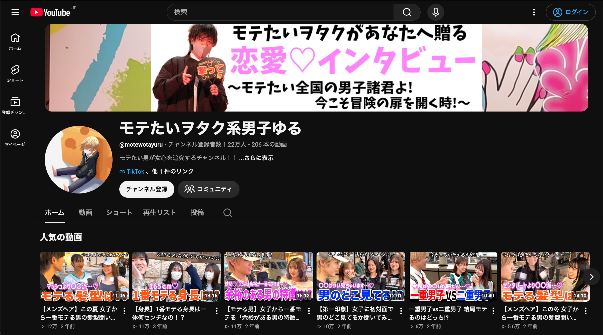
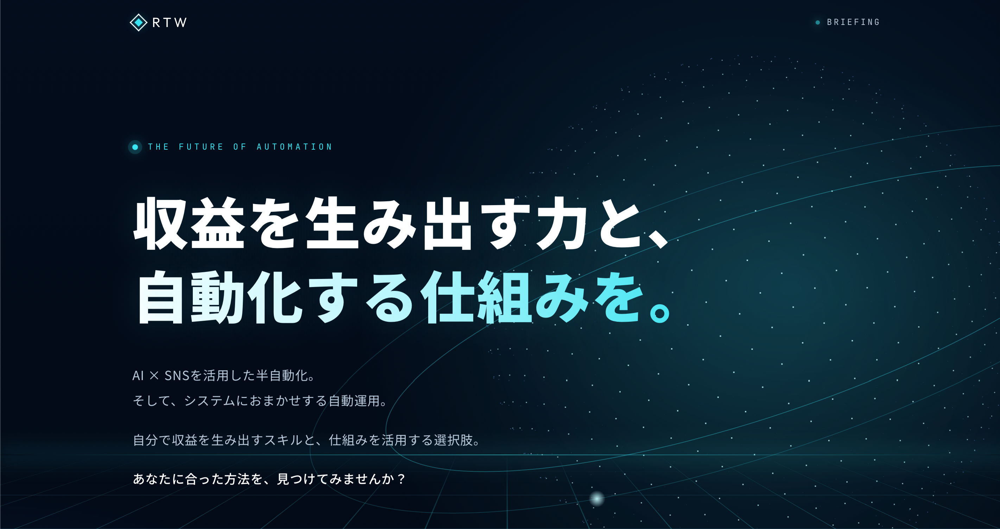
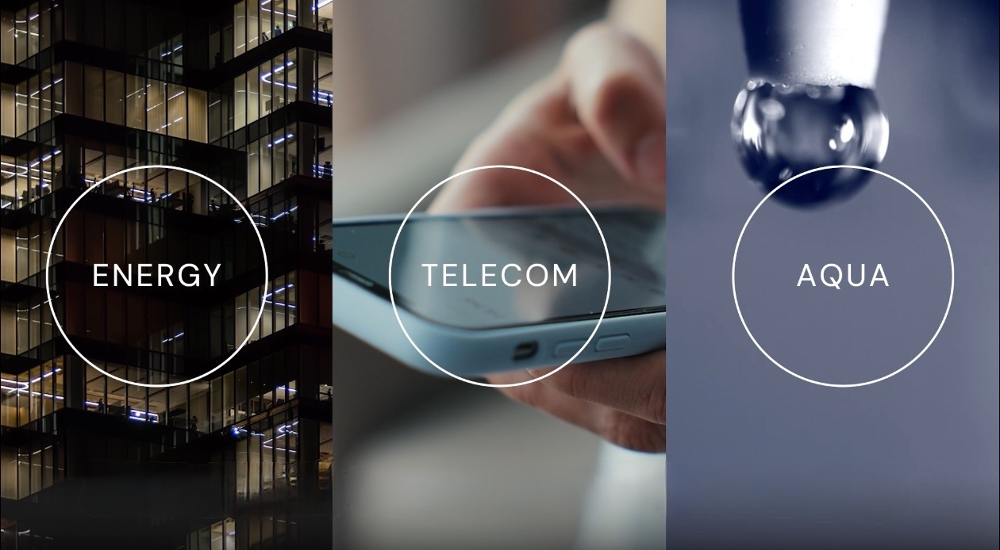
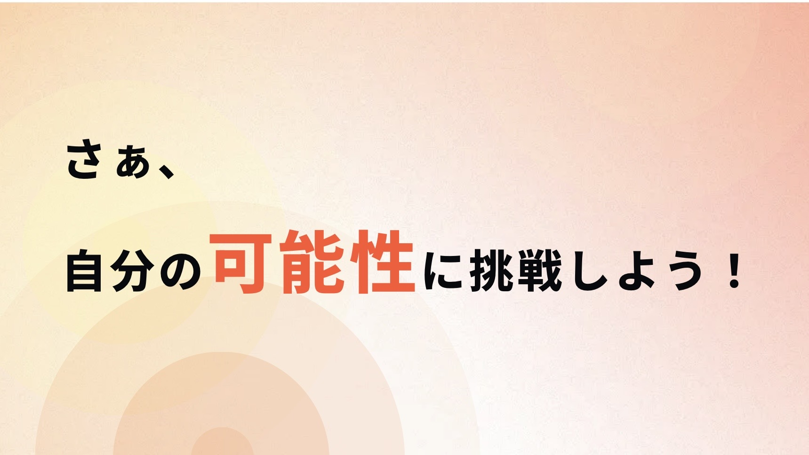
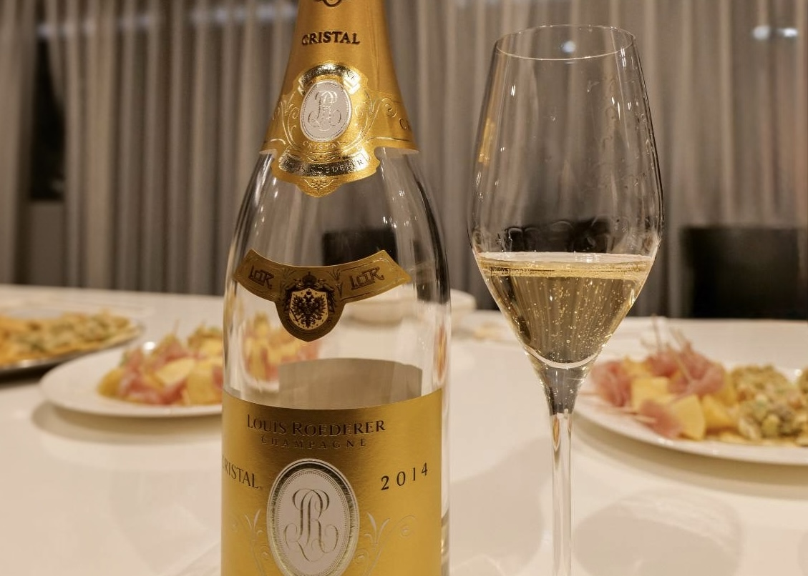
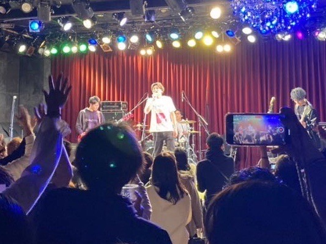
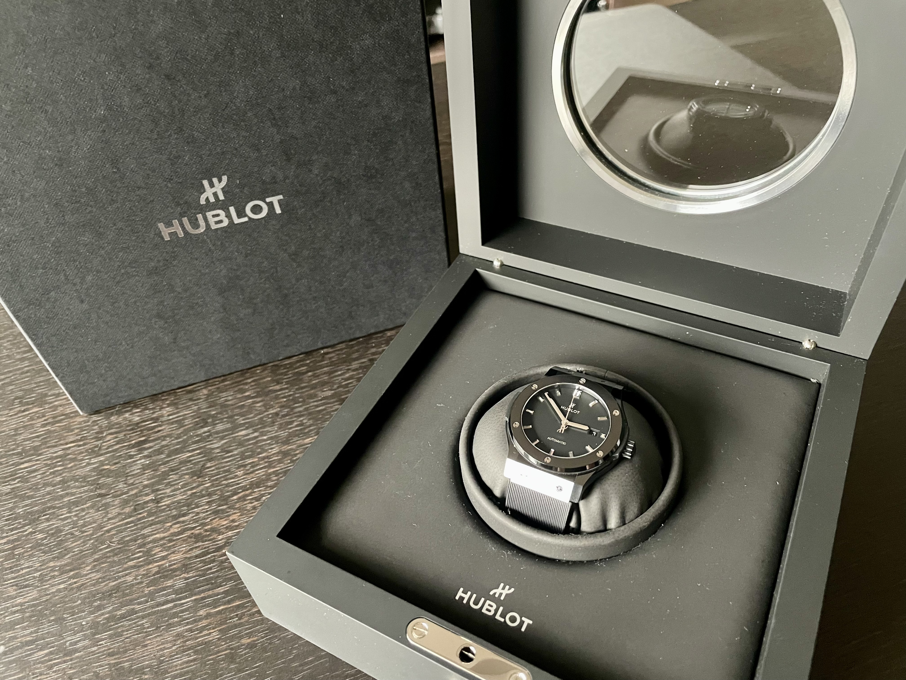
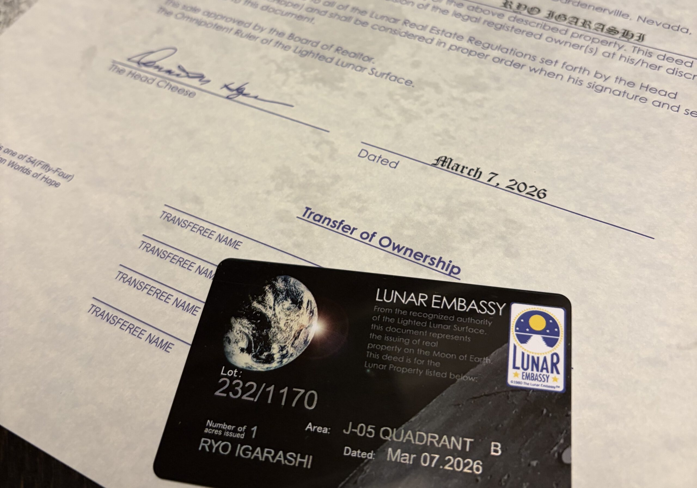

新規開発、既存システムの運用・改善など、お困りごとをうかがってから進め方をご提案します。
詳しく見る（新しいタブで開きます）Services
あなたに役立つことを。協業パートナーさんも募集しています。
「設定が分からない」「急に動かなくなった」など、小さなことでも気軽にご相談ください。
ツールの仕組みや使い方、費用を事前に説明します。FX取引には元本を失うリスクがあり、利益を保証するものではありません。
詳しく見る（新しいタブで開きます）目的や予算をうかがったうえで、合う制作パートナーをご紹介します。見積もりや制作は、パートナー側が対応します。
準備中（新しいタブで開きます）イメージや参考サイトを共有いただければ、制作パートナーへの依頼内容を一緒に整理します。
準備中（新しいタブで開きます）得意な技術、希望単価、稼働日数などをうかがい、条件に近い案件をご案内します。(エージェント会社複数社ご案内可能)

ご来店のほか、貸切やイベント開催のご相談も受け付けています。店舗の詳細は、準備ができ次第こちらに掲載します。
公式LINE（新しいタブで開きます）
アカウントの方向性づくり、投稿の設計、PR案件の獲得まで、現状に合わせて一緒に考えます。まずは今の状況をお聞かせください。
実績: モテたいヲタク系男子ゆる
YouTube（新しいタブで開きます） TikTok（新しいタブで開きます） Instagram（新しいタブで開きます）
「お客様が来ない」「どこから手を付けるか分からない」といった段階から相談できます。現状の整理から始めます。
詳しく見る（新しいタブで開きます）
交流会や企画イベントの開催情報は随時お知らせします。コミュニティ運営のノウハウについてのご相談も歓迎です。
GRITERSに参加（新しいタブで開きます）どんな相手と出会いたいかをうかがい、合いそうなコミュニティをご案内します。

まずは無料のお見積もりから
詳しく見る（新しいタブで開きます）エリア・予算・ご希望をうかがい、対応できる不動産会社をご紹介します。契約や重要事項の説明は、不動産会社が行います。

希望や不安をうかがい、合いそうな転職サービス・求人をご案内します。転職するかどうか迷っている段階でも大丈夫です。
手続きの流れや事前に必要な準備を、サポートサービスにつなぎながらご案内します。申請そのものはハローワークでの手続きになります。
品物の種類をうかがい、買取に対応できる事業者へおつなぎします。
作業内容や報酬、必要な時間を事前に説明します。無理のない範囲で始められるものから選べます。
海外での事業展開や協業のご相談を受け付けています。詳しい取り組みはお問い合わせの際にご説明します。
Hobbies
趣味の紹介。一緒に楽しめることがあればぜひ。

ワイン
ワイン会をやっていたりもします。

ダーツ
ダーツバーたまに行きます。自分のバーにも置いております。（撤去予定）
国内/海外旅行
一度は行きたいところがたくさん。

時計
資産ってことで。
